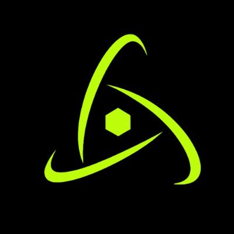

Kryvora L2
Support members with daily questions, onboard new users, and keep community channels active and organized. Monitor spam and scam attempts to maintain a safe, welcoming environment.
Ongoing: run community games and events for engagement, and collect member feedback and issues to relay back to the team.